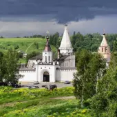

В 1110 году был основан Свято-Успенский монастырь — сейчас один из старейших в России. В 1297 году вокруг него возник город Старица. Сейчас история повторяется: в десятых годах ХХ века Фонд возрождения Свято-Успенского монастыря вернул ему архитектурно-исторический облик, и одновременно город стал возвращаться к жизни.
Благодаря активной работе местной администрации за последнюю четверть века в городе провели полную газификацию, открыли новую поликлинику и современный парк «Старицкое Зарядье», благоустроили набережную вдоль Волги.
Тут родился и служил первый патриарх Московский и Всея Руси Иов, здесь часто бывал и Иван Грозный — он называл ее «Любим-город», Старицкий уезд был плодотворным и для «солнца русской поэзии» — Пушкин написал в этих краях не менее 20 лирических произведений.
Старица ждет новых туристов, для них скоро будут построены качественные отели и рестораны, а также разработаны и запущены новые современные маршруты. Эту миссию и берет на себя компания «Новый город».